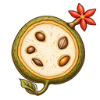

A compact reference for the implemented system. Exact values live in tokens.css; rules and decisions live in the style guide and the brand reference. This page shows patterns. When it disagrees with the production ledger or Observatory, the production source wins and this page needs fixing.
01 / Principle
The instrument, the specimen, the editorial hand.
The instrument
A stable grid, readable evidence and controls that explain themselves.
The specimen
Observed structure with one coherent impossibility. Gears are optional.
The editorial hand
A scarlet label, leader or bracket with a referent. Attention, not artificial alarm.
02 / Color
Cold paper. Concentrated color.
Paper#FFFFFF
Ink#111820
Blueprint#0B2546
Mist#F0F5F8
Scarlet#B62420
Amber#FFC800
Emerald#006B4F
Trace#D9EEF8
Vivid red and emerald belong to artwork and jar light. Functional text uses the darker tokens. Amber marks focus on blueprint, not a surface.
Approved small-text contrast pairs
Calculated WCAG contrast. Each listed pair exceeds 4.5:1.
Foreground / background
Ratio
Ink / Paper
17.87:1
Ink / Mist
16.27:1
Muted / Paper
7.56:1
Muted / Mist
6.88:1
Paper / Blueprint
15.36:1
Trace / Blueprint
12.83:1
Scarlet / Paper
6.44:1
Mist / Scarlet (section labels)
5.86:1
Emerald / Paper
6.53:1
Ink / Amber
11.50:1
03 / Typography
Two voices.
Fraunces Light 300 with SuperSoft 100 for headings, large values and plate statements; Fraunces Semibold 600 only for the wordmark. Commit Mono for the ledger, prose, labels and metadata. Both are bundled locally under SIL OFL 1.1.
Look closely. Follow the evidence.
Commit Mono body at 14–15px, 1.65 line height. Metadata at 12px in muted ink.
REGISTRY ID · FOLIO · CACHED 2026-10-16
04 / Route shell
Every top-level page uses the same frame.
The Observatory is the model for any sibling route (an archive, a gallery, a spotlight). Reuse its shell: wordmark and literal nav with the current page underlined in scarlet, a 1200px column, a display heading, scarlet section labels, generous 64–96px section spacing, folded detail, the closing botanical mark and the Prussian patterned footer with source revision. Content changes per page; the frame does not. A route that only sets a heading and paragraphs on the ledger stylesheet is incomplete.
Example frame · illustrative values
Awesome Open*
Example route
Unique projects
522
Cached metrics
474 / 522
License detected
358 / 522
Illustrated
112 / 522
One literal finding per band, with its scope stated.
Bar list
Projects by category
HTML bars drawn linearly from zero; values printed.
Developer tools96
Data59
Unknown8
Data table 522 projects in this selection
Underlying records stay available in a native disclosure, with CSV/JSON downloads visible outside it.

05 / Specimen plate
One plate for every expanded record.
Order: function statement and reviewed prose, the specimen on its contour floor (627px canvas-width cap, bounds-aware vertical spacing, frameless 2× loupe, no sway), up to two feature notes with scarlet leaders, the identity label with permalink QR, then numbered bands and the “In the wild” departure. Labels and spacing carry hierarchy; there are no horizontal rules inside the plate. The excerpt below is a record without artwork, which leaves no placeholder.
I / SpecimenFictional example · not catalog evidence
Keeps comparable facts close.
Example shows a reviewed function statement in Fraunces, with sourced prose bracketed by a single scarlet rule.
Reviewed against the official README.
Awesome Open* · Field recordExample projectRegistry ID 3f2a… · Folio 041Domain: Developer tools, Data
Native inputs, selects and disclosures with 44px targets and visible focus. Unknown reads “Unknown”, never a stamp. Stars are popularity, not quality.
Example project · License Unknown
07 / Artwork
Strange on second look. Clear on the first.
Ink, pencil, crosshatching and selective color on white. One readable silhouette per specimen, derived from the tool’s actual function. Artwork never changes chart geometry or encodes data.
Not here
No brass mechanisms, wax seals, stained cards, torn edges, parchment or photoreal desks. Photographic glass exists only in the seven-jar hero.
08 / Retired
Do not reintroduce.
Ruled record cards with a two-column grid as the expanded record. Superseded by the plate (B29).
Scarlet left rules on ledger rows or as margin notes. Removed 2026-10-12.
Paper label textures under the specimen. Studied and rejected (B28).
SVG charts on the Observatory. Replaced by HTML bar lists (B31).
Whole-jar scaling, perspective or tilt. Replaced by translation parallax (B40).
Heavier heading weights, Outfit, or a third type family.